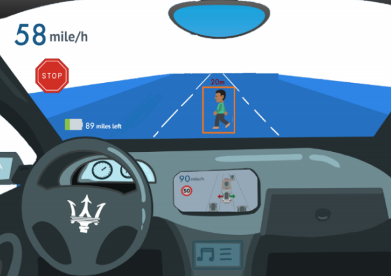

Role: Prototyping, Web Design
Timeline: 3 months (January - March 2020)
Scope: Project management, UX research, Prototyping, Civic Design
In a 10-week Civic Design course at UC San Diego, I worked with a team of 6 members to design and test a creative solution for a complex socio-technical issue: Autonomous Vehicles (AVs). Our team learned how to create innovative solutions for real-world problems through user research methods, rapid prototyping, and communicating with major stakeholders of the related issue.
Our team wanted to create a unique solution that would allow users of AV technology to be able to trust their vehicle’s performance so that they will be more willing to purchase and use AV technology.
AVDA (Autonomous Vehicle Driver Assist) is a user-interface that would help users trust their vehicle’s performance by communicating obstacles and potential risks directly to the user in a non-intrusive, user-friendly way.
The first step in our design process was to collect data by doing field research. We conducted a survey and also interviewed experts in the AV field. Using these two methods, we wanted to gauge the general public’s view of autonomous vehicles as well as gain deeper insight to AV issues from experts. Speaking with these experts also allowed us to cultivate stakeholder relationships.
In the survey we asked our participants to give their opinions on autonomous vehicles, gathering both quantitative and qualitative data. From the results, we found that our participants were mostly concerned with cyber security issues and accidents caused by autonomous vehicles. Interestingly though, our participants also believed that AVs are likely to prevent accidents.
In our interviews, we had the experts answer some questions about the state of the industry and deep issues regarding AV safety. Our interviewees included a former machine learning engineer at TuSimple (a global self-driving truck company), and a leader directly involved in innovation efforts in San Diego. After interviewing these experts, we learned that safety was the most controversial topic among the industry. People are fearful of trusting this new technology, likely influenced by the lack of data and evidence that could support how safe the artificial intelligence software is/could be. In order for us to acquire the socioeconomic benefits of AV technology, people need to be able to trust the technology first.
We created a value-exchange diagram to visualize an overview of our problem frame and to better understand how each stakeholder interacts with each other.
Here is a series of storyboards that frame our problem/solution, and explore our alternatives:
To test our product, we created a makeshift replica of the tablet display first. We presented our participants first-person perspective footage of driving through traffic. We had them watch the video, pretending as if they were operating the vehicle and using the AVDA tablet display prototype. The participants were told to “think aloud” their thought process so that we could understand what they were seeing/thinking. Afterwards, they filled out a survey so we could record any additional feedback for future reference. Our goal was to identify any major successes/breakdowns with our prototype so that we could adjust accordingly.
Results:
In summary, we found that our participants found the prototype useful for relaying information to the user. They felt they were given a slight advantage over others without the technology (e.g., blindspot warnings, merge-ready signals, etc.). However, some features were lacking in terms of communicating enough information. One participant mentioned they would prefer to see where a pedestrian is roughly located when they are spotted by AVDA.
We slightly pivoted our original idea of using only a tablet display to using tablet display and windshield projections. The tablet displays would be available during semi-autonomous or non-autonomous driving modes, while windshield projections would be available only during fully-autonomous driving mode. This is because we felt it would be too distracting to have window projection while users are actually driving.
We created a budget plan and a 12-month implementation plan to identify any potential challenges that would pose a risk to the success of our project. This included start-up costs, general expenses, and our target funding resources.
In order to “build support” for our product, we made a poster, video, and portfolio website that communicate our idea to potential stakeholders and supporters.
Check out our website for more information!